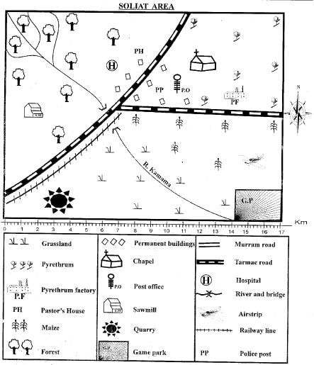
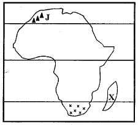
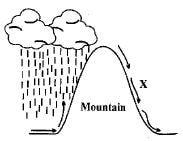

1. Which one of the following forms of transport is NOT used in the map?
2. Which one of the following crops is grown in Soliat area to manufacture insecticides?
3. The MAIN religion that is practised in Soliat area is
4. Three of the following economic activities are practised in Soliat area EXCEPT
5. What is the approximately distance of the railway line in the area?
6. Which type of soil is LIKELY to be found in the North Eastern part of Soliat area?
7. River Kamama flows from _______ to ______ .
8. African resistance was easily conquered by the colonialists MAINLY because
9. Which one of the following countries used constitutional reforms to attain her independence?

10. The island marked X was granted independence by
11. When is the winter period experienced in the area marked x x x?
12. The highlands marked J are known as
13. The body in charge of conducting general elections in Kenya is the
14. According to the new constitution the national assembly consists of the following EXCEPT
15. Which one of the following countries is CORRECTLY matched with its former colonial power?
16. Which one of the following arms of the government is responsible of interpreting the law and applying justice?
17. The largest and the MAIN sea port in Kenya is
18. Which one of the following was a traditional way in which the youth interacted?
19. Which one of the following is NOT a form of print media as a means of communication used in our country?
20. The Swaziland national council or the cabinet that assists the king in ruling is called?
21. Which one of the following species of trees is mainly found in the Equatorial rainforest?
22. In Kenya the government departments known as ministries are headed by
23. The Tazara redway line was constructed MAINLY
24. Which one of the following industries is considered as an invisible export?

25. Which economic activity is LIKELY to be undertaken in the region marked X ?
26. The above type of rainfall is experienced in the
27. Which one of the following traditional techniques of predicting the weather was NOT associated with rainfall?
28. The first remains of they Homo Habilis were discovered at
29. Which one of the following is a similarity between the population of Kenya and Germany?
30. Which one of the following types of marriages is carried out according to African traditions and culture?
31. Which one of the following lakes was formed through down-warping?
32. In which of the following types of soil arc fish ponds mainly constructed?
33. Which one of the following is NOT a characteristic of the Mediterranean type of vegetation?
34. Amhara and Tigre arc communities found in which Eastern Africa country?
35. The MAIN economic activity of the Mijikenda during the pre-coionial period was?
36. The gradual process through which modern man has developed from an ape-like creature is cailed?
37. Who among the following did NOT take part in teaching children in the past?
38. The vegetation distribution in the illustration above is MANILY influenced by
39. Which type of vegetation is found in the area marked X?
40. Three of the following are importance of cultural artifacts. Which one is NOT?
41. Which one of the following is NOT a function of a clan?
42. Growing of crops and raising of animals is referred to as
43. Which one of the following counties grows maize in large scale?
44. The MAIN staple food for the Buganda community in Uganda is
45. Which one of the following is NOT a use of copper?
46. Which of the following is a traditional method of fishing?
47. Which one of the following is an advantage of using railway compared to road transport?
48. The capital city of Old Ghana was located at
49. Who among the following African leaders embraced the colonialists?
50. The first missionary to arrive in East Africa was?
51. Which one of the following is the MAIN reason that led to the scramble and partition of Africa?
52. Which one of the following policies of administration was used to rule Senegal by the French?
53. Which one of the following is NOT a form of child abuse?
54. Which one of the following types of democracy is practised by the government of Kenya?
55. Which one of the following is NOT a function of the National Assembly?
56. The presidential election results are announced by the
57. Which one of the following countries is ruled by a prime minister?
58. Who among the following is an ex-official member of parliament?
59. Which one of the following conditions may NOT lead one to lose a parliamentary seat?
60. Three of the following are reasons that made Samori Toure to become powerful EXCEPT that
SECTION B
CHRISTIAN RELIGIOUS EDUCATION
61. Which one of the following is TRUE about the first woman according to the Genesis stories of creation?
62. By making clothes for Adam and Eve despite their disobedience, God mainly showed that He is?
63. How many members of Noah’s family- escaped the floods?
64. While going to mount Moriah to offer a sacrifice to God, Abraham did NOT carry
65. Who was the father-in-law of Jacob?
66. Why did the brothers of Joseph dislike him?
67. What was Moses doing at the time God called him?
68. Why did Moses pour blood on the Israelites during the covenant with God?
69. Who among the following Kings of Israel built the temple for God?
70. Which prophet foretold the killing of baby boys at the time of Jesus’ birth?
71. The following miracles were performed by Elisha EXCEPT one. Which one is it?
72. Why was Mary chosen to be the mother of Jesus?
73. During the presentation of Jesus, Simeon described him as?
74. Which one of the following was NOT a temptation Jesus faced in the wilderness?
75. By healing the paralysed man, Jesus proved that He
76. Which one of the following is NOT an element of prayer?
77. Why is Stephen considered the first martyr?
78. Jesus resurrected from the dead on ____
79. Which parable did Jesus use to teach his followers about love and concern for the poor?
80. Who foretold about the coming of the Holy Spirit?
81. The following are fruits of the Holy Spirit except one. Which one is it?
82. Which follower of Jesus was referred to as the apostle to the Gentiles?
83. Which book in the old testament teaches about tithing?
84. What did Jesus promise to the peacemakers during the sermon on the mount?
85. Which one of the following is true about initiation in traditional African society and baptism in Christianity?
86. In traditional African society elders were MAINLY expected to be?
87. Which traditional African community refers their God as the Great distributor?
88. As a Christian the BEST advice you can give a person abusing drugs is?
89. Stephen, a Std 8 pupil found his lost books in his deskmate’s bag. What is the BEST thing for him to do as a Christian?
90. The first Christian missionaries to come to Kenya were representatives of?
ISLAMIC RELIGIOUS EDUCATION
61. “Let them adore the Lord of this house” is an extract from surah
62. Which of the following surahs lays emphasis on protection of orphans?
63. In which of these surahs is a muslim commanded to give Zakah?
64. The Surah that gives Muslims encouragement in coping up with life is
65. Which surah is closely related to the conquest of Makkah?
66. “The bravest among you is the one who can control himself during anger and the most humble is that who forgives when he has the ability to revenge.” The MAIN teaching of the Hadith is:
67. Which of these funeral rites is performed LAST?
68. Equality in hajj can be manifested BEST through
69. On which of the following days is saum prohibited?
70. Which of the following attributes of Allah bears a similar meaning as Al-BAAR?
71. Which parts are cpmmon in BOTH udhu and tayammum?
72. The business malpractice of hiding goods in anticipation for hike in price in the near future is
73. Halimah, a Std 8 girl saw a janazah being carried as she was on her way back to school one afternoon. What was the BEST action for her to do?
74. During the conquest of Makkah some places were declared sate. Which of the following is NOT among them?
75. Which of the following is NOT a pillar of umrah?
76. The battle in wliich muslims emerged with great victory was
77. The prophet of Allah who attained the title ’khaliilah' was
78. The prophet p.b.u.h went for miiraj in the company of:-
79. Your friend Salim is looking for a wife. Which quality would you advise him to consider first?
80. During the second Hijra to Habash, muslims were led by
81. Which of the following prayers is conducted following a lunar eclipse?
82. Which of the following birds took errands for Nabii Suleiman to the queen of Saba’a?
83. Which of the following najsat must be removed by washing seven times?
84. Which of these items is NOT liable for zakat?
85. Muslims lost in the battle of Uhud as a result of
86. The pillar of hajj that demonstrate physical fitness of Muslims is
87. Who among the following people passed on as a result of the boycott at Shiib Abu-Twalib?
88. All the following terms have one thing in common EXCEPT
89. The angel who is the guardian of hell is
90. Which of these phrases is uttered to conclude prayer?